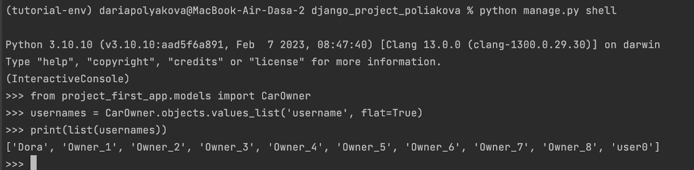
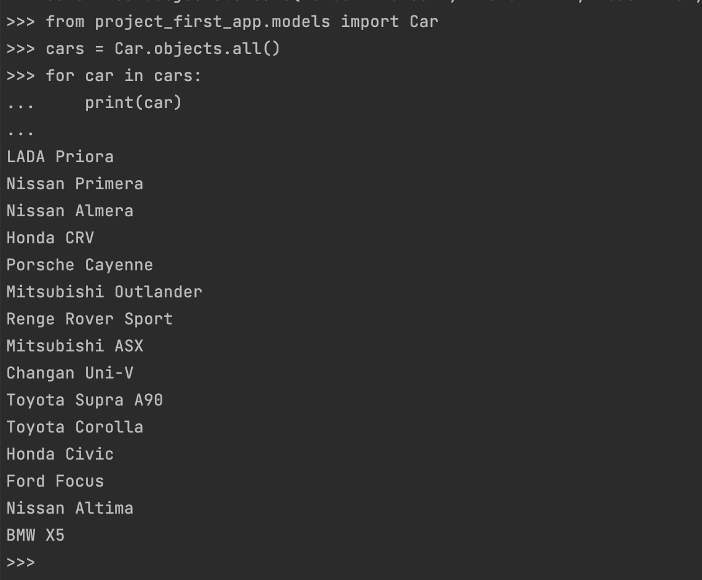
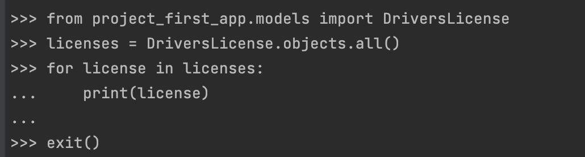

1. Сайт "Список научных конференций"
Вариант задания №5
По моему номеру из таблицы я определила вариант лабораторной работы, который мне надо реализовать:
Интерфейс описывает названия конференций, список тематик, место проведения, период проведения, описание конференций, описание место проведения, условия участия. Необходимо реализовать следующий функционал:
-
Регистрация новых пользователей.
-
Написание отзывов к конференциям. При добавлении комментариев, должны сохраняться даты конференции, текст комментария, рейтинг (1-10), информация о комментаторе.
-
Просмотр конференций и регистрацию авторов для выступлений. Пользователь должен иметь возможность редактирования и удаления своих регистраций.
-
В клиентской части должна формироваться таблица, отображающая всех участников по конференциям.
-
Администратор должен иметь возможность указания результатов выступления (рекомендован к публикации или нет) средствами Django- admin.
1. Регистрация и авторизация новых пользователей
Для начала нам надо зарегистрировать пользователя. Для этого надо нажать на серую кнопку "Register". Здесь мы сможем ввсети имя пользователя, пароль, дату рождения и национальность.

После этого необходимо нажать на синюю кнопку "Login" и ввести только что созданнные имя пользователя и пароль.

При входе мы попадаем на главную страницу, которая отображает список всех конференций.

Открыв одну из конференций, мы увидим всю информацию о ней: название, темы, место проведения, дату начала, дату конца, описание конференции, описание локации, а также отзывы к этой конференции, если они есть.

2. Написание отзывов к конференциям
На открывшейся странице с конференцией можно написать отзыв, нажав кнопку "Add Review". Здесь можео написать отзыв, а также поставить оценку конференции от 1 до 10. Нажав кнопку "Submit Review", мы сохраним отзыв.

Как мы видим, отзыв добавлися на страницу конференции. Также мы видим ник пользователя, который добавил отзыв, сам текст отзыва, оценку, а также дату и время добавления отзыва.

3. Просмотр конференций и регистрацию авторов для выступлений. Таблица с участниками
В разделе "Participant Registration" мы видим список всех конференций, на которые можно зарегистрироваться нажав кнопку "Sign up" напротив желаемой конференции.

Теперь в разделе "Participants" мы видим список участников, где мы можем найти нашу регистрацию в самом низу.

Чтобы отписаться от конференции нужно в разреле "Your conference registrations" выбрать конференцию от которой хочешь отписаться и нажать "Delete" напротив нее.